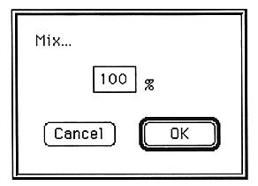

The waveform on the clipboard is mixed with the selected part of the waveform data currently being edited.
When you select Mix, the following screen appears.

The parameters set in this window are as follows:
Mix
Enter the percentage of the currently selected file to be mixed as a percentage of the currently active waveform.
You can set a value between 1 and 100.